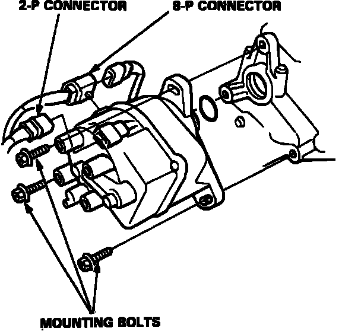
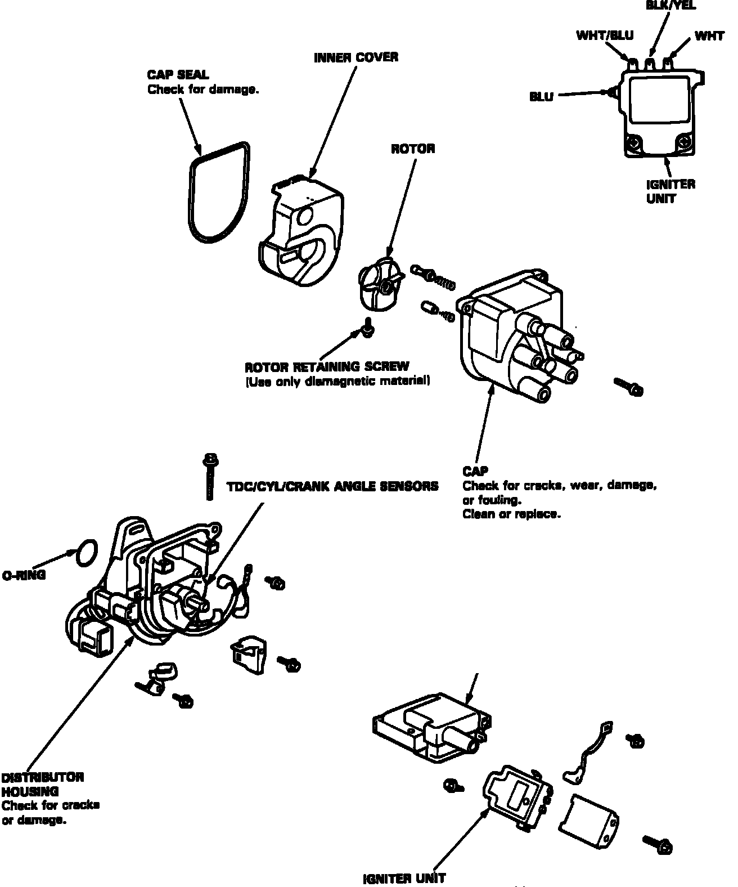
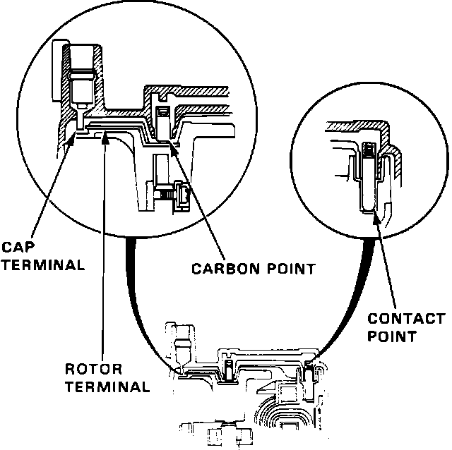
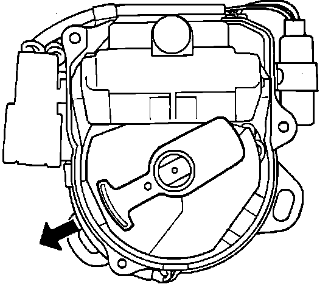
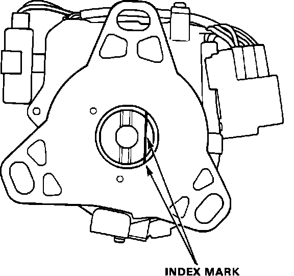
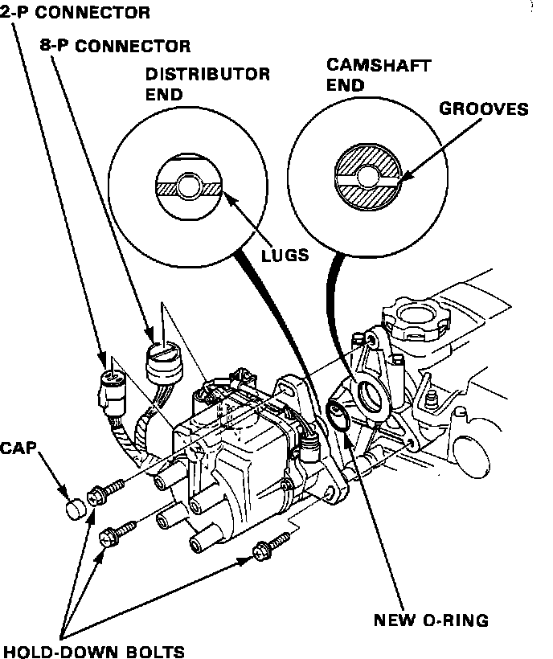
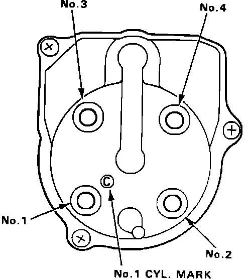

Distributor: Service and Repair
DISTRIBUTOR REMOVAL
1. Disconnect the 2-P and 8-P connectors from the distributor.
2. Disconnect the spark plug wires from the distributor cap.
Distributor Removal:

3. Remove the distributor hold-down bolts, then remove the distributor from the cylinder head.
DISASSEMBLY
Distributor Overhaul:

4. Use the exploded view image for distributor disassembly.
INSPECTION
Distributor Cap Inspection:

5. Check for rough or pitted rotor and cap terminals.
6. Scrape or file off the carbon deposits. Smooth the rotor terminal with an oil stone or #600 sandpaper if rough.
7. Check the distributor cap for cracks, wear and damages. If necessary, clean or replace it.
REASSEMBLY
Distributor Assembly:

8. Install the rotor, then turn it so that it faces in the direction shown (toward the No. 1 cylinder).
Index Mark:

9. Set the thrust washer and coupling on the shaft.
10. Check that the rotor is still pointing toward the No. 1 cylinder, then align the index mark on the housing with the index mark on the coupling.
11. Drive in the pin and secure it with the pin retainer.
INSTALLATION
12. Coat a new 0-ring with engine oil then install it.
13. Slip the distributor into position.
NOTE: The lugs on the end of the distributor and its mating grooves in the camshaft end are both offset to eliminate the possibility of installing the distributor 180~ out of time.
Distributor Installation:

14. Install the hold-down bolts and tighten temporarily.
15. Connect the 2-P and 8-P connectors to the distributor.
Distributor Installation:

16. Connect the spark plug wires as shown.
17. Set the timing with a timing light as shown in ADJUSTMENT PROCEDURES.
18. After adjusting, tighten the hold-down bolts, then install the cap on the bolt.
Torque: 17 ft.lbs (24 Nm)